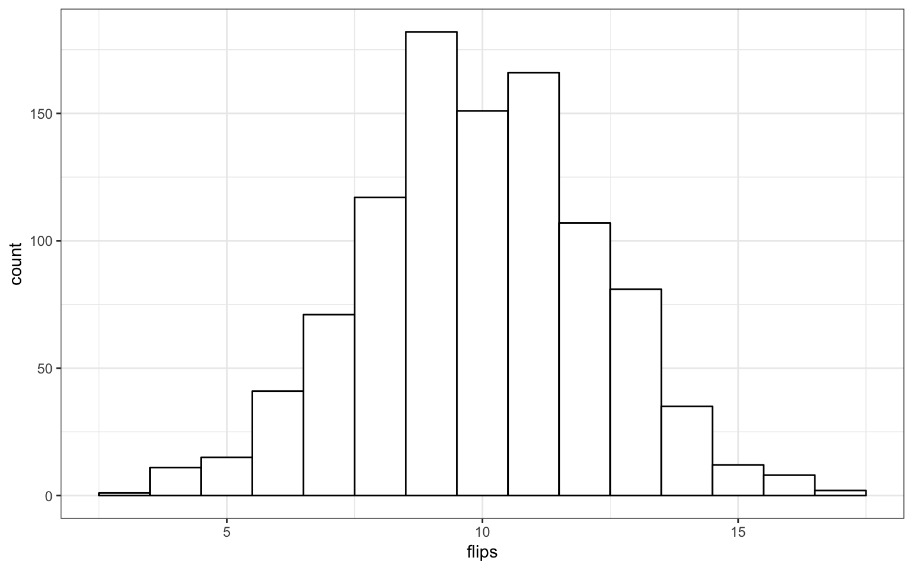
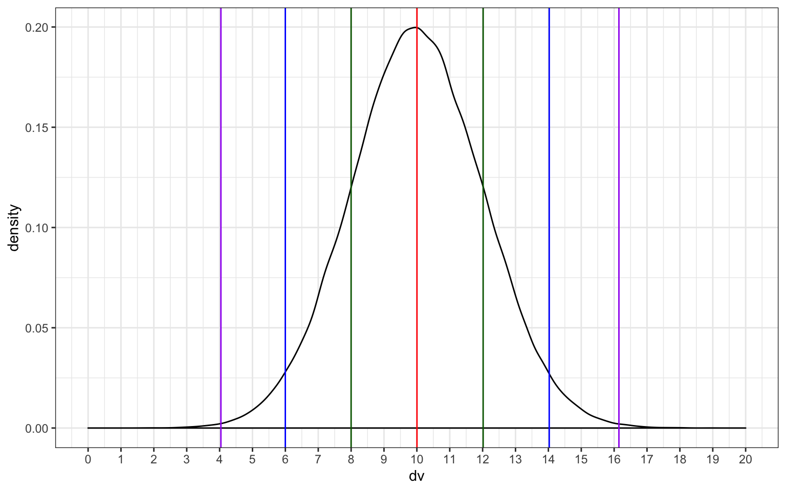
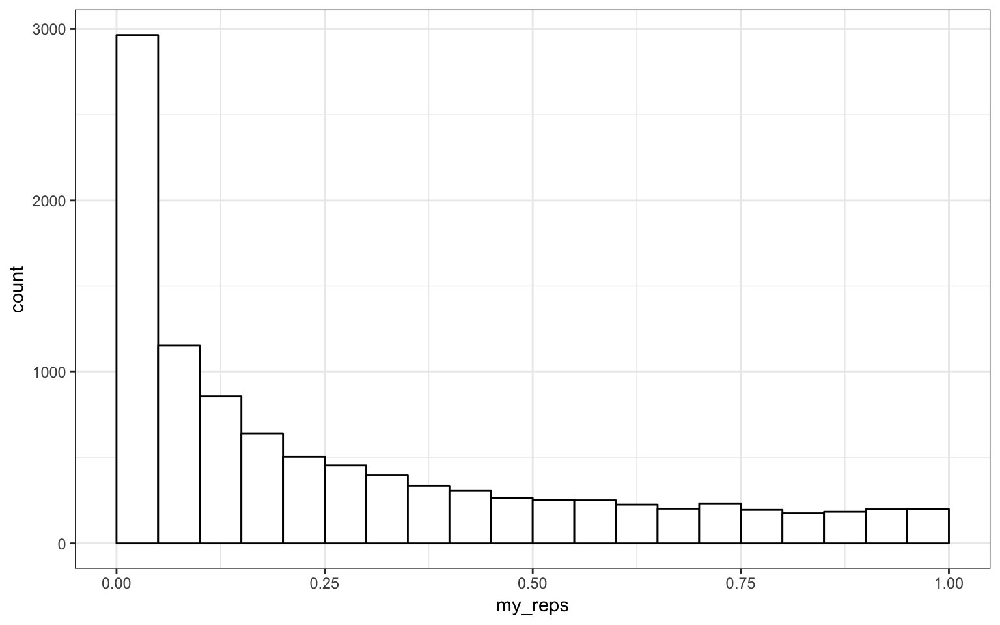
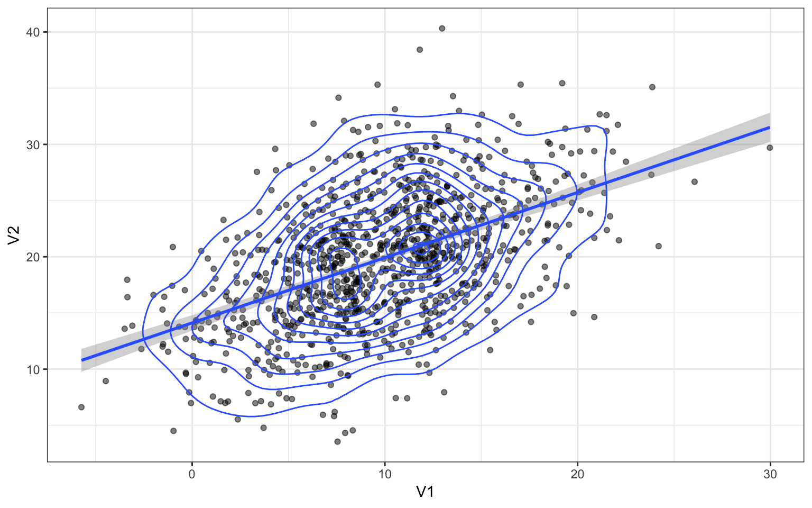
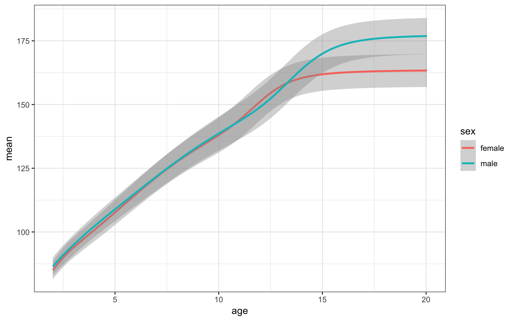
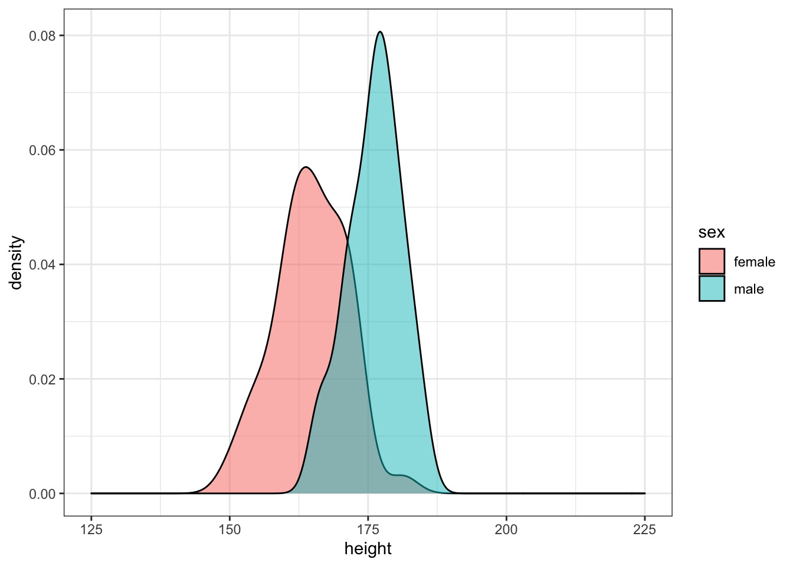
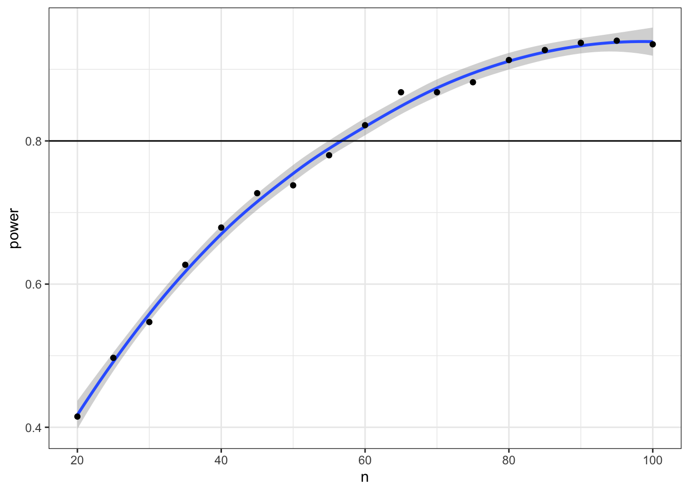

Chapter 8 Probability & Simulation
8.1 Learning Objectives
8.1.1 Basic
- Understand what types of data are best modeled by different distributions
- uniform
- binomial
- normal
- poisson
- Generate and plot data randomly sampled from the above distributions
- Test sampled distributions against a null hypothesis
- exact binomial test
- t-test (1-sample, independent samples, paired samples)
- correlation (pearson, kendall and spearman)
- Define the following statistical terms:
- p-value
- alpha
- power
- false positive (type I error)
- false negative (type II error)
- confidence interval
8.1.2 Intermediate
- Create a function to generate a sample with specific properties and run an inferential test
- Calculate power using
replicateand a sampling function - Calculate the minimum sample size for a specific power level and design
8.1.3 Advanced
- Generate 3+ variables from a multivariate normal distribution and plot them
8.2 Resources
- Chapter 21: Iteration of R for Data Science
- Improving your statistical inferences on Coursera (week 1)
- Simulation tutorials
- Faux package for data simulation
- Simulation-Based Power-Analysis for Factorial ANOVA Designs (Lakens and Caldwell 2019)
- Understanding mixed effects models through data simulation (DeBruine and Barr 2019)
8.3 Distributions
Simulating data is a very powerful way to test your understanding of statistical concepts. We are going to use simulations to learn the basics of probability.
# libraries needed for these examples
library(tidyverse)
library(MASS)
set.seed(8675309) # makes sure random numbers are reproducible8.3.1 Uniform Distribution
The uniform distribution is the simplest distribution. All numbers in the range have an equal probability of being sampled.
Take a minute to think of things in your own research that are uniformly distributed.
8.3.1.1 Sample continuous distribution
runif(n, min=0, max=1)
Use runif() to sample from a continuous uniform distribution.
## [1] 0.1594836 0.4781883 0.7647987 0.7696877 0.2685485 0.6730459 0.9787908
## [8] 0.8463270 0.8566562 0.44516018.3.1.2 Sample discrete distribution
sample(x, size, replace = FALSE, prob = NULL)
Use sample() to sample from a discrete distribution.
Simulate a single roll of a 6-sided die.
## [1] 5Simulate 10 rolls of a 6-sided die. Set replace to TRUE so each roll is independent. See what happens if you set replace to FALSE.
## [1] 6 3 1 4 5 2 3 6 4 6You can also use sample to sample from a list of named outcomes.
## [1] "ferret" "fish" "bird" "cat" "ferret" "bird" "cat"
## [8] "ferret" "cat" "cat"Ferrets are a much less common pet than cats and dogs, so our sample isn’t very realistic. You can set the probabilities of each item in the list with the prob argument.
pet_types <- c("cat", "dog", "ferret", "bird", "fish")
pet_prob <- c(0.3, 0.4, 0.1, 0.1, 0.1)
sample(pet_types, 10, replace = TRUE, prob = pet_prob)## [1] "dog" "dog" "dog" "ferret" "ferret" "cat" "ferret"
## [8] "cat" "ferret" "dog"8.3.2 Binomial Distribution
The binomial distribution is useful for modeling binary data, where each observation can have one of two outcomes, like success/failure, yes/no or head/tails.
8.3.2.1 Sample distribution
rbinom(n, size, prob)
The rbinom function will generate a random binomial distribution.
n= number of observationssize= number of trialsprob= probability of success on each trial
Coin flips are a typical example of a binomial distribution, where we can assign heads to 1 and tails to 0.
## [1] 0 0 1 0 1 0 1 1 1 1 1 1 0 0 0 1 1 1 0 1## [1] 1 1 1 1 1 1 1 0 1 1 0 1 1 1 1 1 1 0 1 1You can generate the total number of heads in 1 set of 20 coin flips by setting size to 20 and n to 1.
## [1] 15You can generate more sets of 20 coin flips by increasing the n.
## [1] 8 10 11 10 6 10 9 8 7 5You should always check your randomly generated data to check that it makes sense. For large samples, it’s easiest to do that graphically. A histogram is usually the best choice for plotting binomial data.
flips <- rbinom(1000, 20, 0.5)
ggplot() +
geom_histogram(
aes(flips),
binwidth = 1,
fill = "white",
color = "black"
)
Run the simulation above several times, noting how the histogram changes. Try changing the values of n, size, and prob.
8.3.2.2 Exact binomial test
binom.test(x, n, p)
You can test a binomial distribution against a specific probability using the exact binomial test.
x= the number of successesn= the number of trialsp= hypothesised probability of success
Here we can test a series of 10 coin flips from a fair coin and a biased coin against the hypothesised probability of 0.5 (even odds).
n <- 10
fair_coin <- rbinom(1, n, 0.5)
biased_coin <- rbinom(1, n, 0.6)
binom.test(fair_coin, n, p = 0.5)
binom.test(biased_coin, n, p = 0.5)##
## Exact binomial test
##
## data: fair_coin and n
## number of successes = 3, number of trials = 10, p-value = 0.3438
## alternative hypothesis: true probability of success is not equal to 0.5
## 95 percent confidence interval:
## 0.06673951 0.65245285
## sample estimates:
## probability of success
## 0.3
##
##
## Exact binomial test
##
## data: biased_coin and n
## number of successes = 7, number of trials = 10, p-value = 0.3438
## alternative hypothesis: true probability of success is not equal to 0.5
## 95 percent confidence interval:
## 0.3475471 0.9332605
## sample estimates:
## probability of success
## 0.7Run the code above several times, noting the p-values for the fair and biased coins. Alternatively, you can simulate coin flips online and build up a graph of results and p-values.
- How does the p-value vary for the fair and biased coins?
- What happens to the confidence intervals if you increase n from 10 to 100?
- What criterion would you use to tell if the observed data indicate the coin is fair or biased?
- How often do you conclude the fair coin is biased (false positives)?
- How often do you conclude the biased coin is fair (false negatives)?
8.3.2.3 False positives & negatives
The probability that a test concludes the fair coin is biased is called the false positive rate (or Type I Error Rate). The alpha is the false positive rate we accept for a test. This is traditionally set at 0.05, but there are good arguments for setting a different criterion in some circumstances.
The probability that a test concludes the biased coin is fair is called the false negative rate (of Type II Error Rate). The power of a test is 1 minus its false negative rate (i.e., the true positive rate). Power depends on how biased the coin is, how many samples we take, and what we set alpha to.
8.3.2.4 Sampling function
To estimate these rates, we need to repeat the sampling above many times. A function is ideal for repeating the exact same procedure over and over. Set the arguments of the function to variables that you might want to change. Here, we will want to estimate power for:
- different sample sizes (
n) - different coin biases (
bias) - different hypothesised probabilities (
p, defaults to 0.5)
sim_binom_test <- function(n, bias, p = 0.5) {
coin <- rbinom(1, n, bias)
btest <- binom.test(coin, n, p)
btest$p.value
}Once you’ve created your function, test it a few times, changing the values.
## [1] 0.020978748.3.2.5 Calculate power
Then you can use the replicate() function to run it many times and save all the output values. You can calculate the power of your analysis by checking the proportion of your simulated analyses that have a p-value less than your alpha (the probability of rejecting the null hypothesis when the null hypothesis is true).
my_reps <- replicate(1e4, sim_binom_test(100, 0.6))
alpha <- 0.05 # this does not always have to be 0.05
mean(my_reps < alpha)## [1] 0.4588
1e4 is just scientific notation for a 1 followed by 4 zeros (10000). When you’re running simulations, you usually want to run a lot of them. It’s a pain to keep track of whether you’ve typed 5 or 6 zeros (100000 vs 1000000) and this will change your running time by an order of magnitude.
8.3.3 Normal Distribution
8.3.3.1 Sample distribution
rnorm(n, mean, sd)
We can simulate a normal distribution of size n if we know the mean and standard deviation (sd). A density plot is usually the best way to visualise this type of data if your n is large.
dv <- rnorm(1e5, 10, 2)
# proportions of normally-distributed data
# within 1, 2, or 3 SD of the mean
sd1 <- .6827
sd2 <- .9545
sd3 <- .9973
ggplot() +
geom_density(aes(dv), fill = "white") +
geom_vline(xintercept = mean(dv), color = "red") +
geom_vline(xintercept = quantile(dv, .5 - sd1/2), color = "darkgreen") +
geom_vline(xintercept = quantile(dv, .5 + sd1/2), color = "darkgreen") +
geom_vline(xintercept = quantile(dv, .5 - sd2/2), color = "blue") +
geom_vline(xintercept = quantile(dv, .5 + sd2/2), color = "blue") +
geom_vline(xintercept = quantile(dv, .5 - sd3/2), color = "purple") +
geom_vline(xintercept = quantile(dv, .5 + sd3/2), color = "purple") +
scale_x_continuous(
limits = c(0,20),
breaks = seq(0,20)
)
Run the simulation above several times, noting how the density plot changes. What do the vertical lines represent? Try changing the values of n, mean, and sd.
8.3.3.2 T-test
t.test(x, y, alternative, mu, paired)
Use a t-test to compare the mean of one distribution to a null hypothesis (one-sample t-test), compare the means of two samples (independent-samples t-test), or compare pairs of values (paired-samples t-test).
You can run a one-sample t-test comparing the mean of your data to mu. Here is
a simulated distribution with a mean of 0.5 and an SD of 1, creating an effect
size of 0.5 SD when tested against a mu of 0. Run the simulation a few times to
see how often the t-test returns a significant p-value (or run it in the shiny app).
##
## One Sample t-test
##
## data: sim_norm
## t = 4.2158, df = 99, p-value = 5.507e-05
## alternative hypothesis: true mean is not equal to 0
## 95 percent confidence interval:
## 0.2058657 0.5719533
## sample estimates:
## mean of x
## 0.3889095Run an independent-samples t-test by comparing two lists of values.
##
## Welch Two Sample t-test
##
## data: a and b
## t = -1.9196, df = 195.54, p-value = 0.05636
## alternative hypothesis: true difference in means is not equal to 0
## 95 percent confidence interval:
## -0.520235824 0.007028115
## sample estimates:
## mean of x mean of y
## 0.3852249 0.6418287
The paired argument defaults to FALSE, but it’s good practice to always explicitly set it so you are never confused about what type of test you are performing.
8.3.3.3 Sampling function
We can use the names() function to find out the names of all the t.test parameters
and use this to just get one type of data, like the test statistic (e.g., t-value).
## [1] "statistic" "parameter" "p.value" "conf.int" "estimate"
## [6] "null.value" "stderr" "alternative" "method" "data.name"
## t
## -1.919595Alternatively, use broom::tidy() to convert the output into a tidy table.
## # A tibble: 1 x 10
## estimate estimate1 estimate2 statistic p.value parameter conf.low
## <dbl> <dbl> <dbl> <dbl> <dbl> <dbl> <dbl>
## 1 -0.257 0.385 0.642 -1.92 0.0564 196. -0.520
## # … with 3 more variables: conf.high <dbl>, method <chr>,
## # alternative <chr>If you want to run the simulation many times and record information each time, first you need to turn your simulation into a function.
sim_t_ind <- function(n, m1, sd1, m2, sd2) {
v1 <- rnorm(n, m1, sd1)
v2 <- rnorm(n, m2, sd2)
t_ind <- t.test(v1, v2, paired = FALSE)
return(t_ind$p.value)
}Run it a few times to check that it gives you sensible values.
## [1] 0.4973957Now replicate the simulation 1000 times.
my_reps <- replicate(1e4, sim_t_ind(100, 0.7, 1, 0.5, 1))
alpha <- 0.05
power <- mean(my_reps < alpha)
power## [1] 0.2938Run the code above several times. How much does the power value fluctuate? How many replications do you need to run to get a reliable estimate of power?
Compare your power estimate from simluation to a power calculation using power.t.test().
Here, delta is the difference between m1 and m2 above.
##
## Two-sample t test power calculation
##
## n = 100
## delta = 0.2
## sd = 1
## sig.level = 0.05
## power = 0.2902664
## alternative = two.sided
##
## NOTE: n is number in *each* groupYou can plot the distribution of p-values.
ggplot() +
geom_histogram(
aes(my_reps),
binwidth = 0.05,
boundary = 0,
fill = "white",
color = "black"
)
What do you think the distribution of p-values is when there is no effect (i.e., the means are identical)? Check this yourself.
Make sure the boundary argument is set to 0 for p-value histograms. See what happens with a null effect if boundary is not set.
8.3.3.4 Bivariate Normal
8.3.3.4.1 Correlation
You can test if two continuous variables are related to each other using the cor() function.
Below is a quick and dirty way to generate two correlated variables. x is drawn
from a normal distribution, while y is the sum of x and another value drawn
from a random normal distribution. We’ll learn later how to generate specific
correlations in simulated data.
## [1] 0.7039656cor() defaults to Pearson’s correlations. Set the method argument to use
Kendall or Spearman correlations.
## [1] 0.67867998.3.3.4.2 Sample distribution
What if we want to sample from a population with specific relationships between
variables? We can sample from a bivariate normal distribution using the MASS package,
n <- 1000 # number of random samples
rho <- 0.5 # population correlation between the two variables
mu <- c(10, 20) # the means of the samples
stdevs <- c(5, 6) # the SDs of the samples
# correlation matrix
cor_mat <- matrix(c( 1, rho,
rho, 1), 2)
# create the covariance matrix
sigma <- (stdevs %*% t(stdevs)) * cor_mat
# sample from bivariate normal distribution
bvn <- mvrnorm(n, mu, sigma)
cor(bvn) # check correlation matrix## [,1] [,2]
## [1,] 1.0000000 0.4709289
## [2,] 0.4709289 1.0000000Plot your sampled variables to check everything worked like you expect. You need
to convert the output of mvnorm into a tibble in order to use it in ggplot.
bvn %>%
as_tibble() %>%
ggplot(aes(V1, V2)) +
geom_point(alpha = 0.5) +
geom_smooth(method = "lm") +
geom_density2d()## Warning: `as_tibble.matrix()` requires a matrix with column names or a `.name_repair` argument. Using compatibility `.name_repair`.
## This warning is displayed once per session.
8.3.4 Multivariate Normal
8.3.4.0.1 Sample distribution
n <- 200 # number of random samples
rho1_2 <- 0.5 # correlation betwen v1 and v2
rho1_3 <- 0 # correlation betwen v1 and v3
rho2_3 <- 0.7 # correlation betwen v2 and v3
mu <- c(10, 20, 30) # the means of the samples
stdevs <- c(8, 9, 10) # the SDs of the samples
# correlation matrix
cor_mat <- matrix(c( 1, rho1_2, rho1_3,
rho1_2, 1, rho2_3,
rho1_3, rho2_3, 1), 3)
sigma <- (stdevs %*% t(stdevs)) * cor_mat
bvn3 <- mvrnorm(n, mu, sigma)
cor(bvn3) # check correlation matrix## [,1] [,2] [,3]
## [1,] 1.0000000 0.4145752 -0.1546829
## [2,] 0.4145752 1.0000000 0.6825149
## [3,] -0.1546829 0.6825149 1.00000008.3.4.0.2 3D Plots
You can use the plotly library to make a 3D graph.
##
## Attaching package: 'plotly'## The following object is masked from 'package:MASS':
##
## select## The following object is masked from 'package:ggplot2':
##
## last_plot## The following object is masked from 'package:stats':
##
## filter## The following object is masked from 'package:graphics':
##
## layout8.4 Example
This example uses the Growth Chart Data Tables from the US CDC.
8.4.1 Load & wrangle
We have to do a little data wrangling first. Have a look at the data after you
import it and relabel Sex to male and female instead of 1 and 2. Also
convert Agemos (age in months) to years. Relabel the column 0 as mean and
calculate a new column named sd as the difference between columns 1 and 0.
height_age <- read_csv("https://www.cdc.gov/growthcharts/data/zscore/zstatage.csv") %>%
filter(Sex %in% c(1,2)) %>%
mutate(
sex = recode(Sex, "1" = "male", "2" = "female"),
age = as.numeric(Agemos)/12,
sd = `1` - `0`
) %>%
dplyr::select(sex, age, mean = `0`, sd)## Parsed with column specification:
## cols(
## Sex = col_character(),
## Agemos = col_character(),
## `-2` = col_double(),
## `-1.5` = col_double(),
## `-1` = col_double(),
## `-0.5` = col_double(),
## `0` = col_double(),
## `0.5` = col_double(),
## `1` = col_double(),
## `1.5` = col_double(),
## `2` = col_double()
## )
If you run the code above without putting dplyr:: before the select() function, you will get an error message. This is because the MASS package also has a function called select() and, since we loaded MASS after tidyverse, the MASS function is the default. When you loaded MASS, you should have seen a warning like “The following object is masked from ‘package:dplyr’: select”. You can use functions with the same name from different packages by specifying the package before the function name, separated by two colons.
8.4.2 Plot
Plot your new data frame to see how mean height changes with age for boys and girls.
ggplot(height_age, aes(age, mean, color = sex)) +
geom_smooth(aes(ymin = mean - sd, ymax = mean + sd), stat="identity")
8.4.3 Get means and SDs
Create new variables for the means and SDs for 20-year-old men and women.
height_sub <- height_age %>% filter(age == 20)
m_mean <- height_sub %>% filter(sex == "male") %>% pull(mean)
m_sd <- height_sub %>% filter(sex == "male") %>% pull(sd)
f_mean <- height_sub %>% filter(sex == "female") %>% pull(mean)
f_sd <- height_sub %>% filter(sex == "female") %>% pull(sd)
height_sub## # A tibble: 2 x 4
## sex age mean sd
## <chr> <dbl> <dbl> <dbl>
## 1 male 20 177. 7.12
## 2 female 20 163. 6.468.4.4 Simulate a population
Simulate 50 random male heights and 50 radom female heights using the rnorm()
function and the means and SDs above. Plot the data.
sim_height <- tibble(
male = rnorm(50, m_mean, m_sd),
female = rnorm(50, f_mean, f_sd)
) %>%
gather("sex", "height", male:female)
ggplot(sim_height) +
geom_density(aes(height, fill = sex), alpha = 0.5) +
xlim(125, 225)
Run the simulation above several times, noting how the density plot changes. Try changing the age you’re simulating.
8.4.5 Analyse simulated data
Use the sim_t_ind(n, m1, sd1, m2, sd2) function we created above to generate
one simulation with a sample size of 50 in each group using the means and SDs
of male and female 14-year-olds.
height_sub <- height_age %>% filter(age == 14)
m_mean <- height_sub %>% filter(sex == "male") %>% pull(mean)
m_sd <- height_sub %>% filter(sex == "male") %>% pull(sd)
f_mean <- height_sub %>% filter(sex == "female") %>% pull(mean)
f_sd <- height_sub %>% filter(sex == "female") %>% pull(sd)
sim_t_ind(50, m_mean, m_sd, f_mean, f_sd)## [1] 0.0030095488.4.6 Replicate simulation
Now replicate this 1e4 times using the replicate() function. This function
will save the returned p-values in a list (my_reps). We can then check what
proportion of those p-values are less than our alpha value. This is the power of
our test.
my_reps <- replicate(1e4, sim_t_ind(50, m_mean, m_sd, f_mean, f_sd))
alpha <- 0.05
power <- mean(my_reps < alpha)
power## [1] 0.64358.4.7 One-tailed prediction
This design has about 65% power to detect the sex difference in height (with a
2-tailed test). Modify the sim_t_ind function for a 1-tailed prediction.
You could just set alternative equal to “greater” in the function, but it might be
better to add the alternative argument to your function (giving it the same default
value as t.test) and change the value of alternative in the function to alternative.
sim_t_ind <- function(n, m1, sd1, m2, sd2, alternative = "two.sided") {
v1 <- rnorm(n, m1, sd1)
v2 <- rnorm(n, m2, sd2)
t_ind <- t.test(v1, v2, paired = FALSE, alternative = alternative)
return(t_ind$p.value)
}
my_reps <- replicate(1e4, sim_t_ind(50, m_mean, m_sd, f_mean, f_sd, "greater"))
mean(my_reps < alpha)## [1] 0.76058.4.8 Range of sample sizes
What if we want to find out what sample size will give us 80% power? We can try trial and error. We know the number should be slightly larger than 50. But you can search more systematically by repeating your power calculation for a range of sample sizes.
This might seem like overkill for a t-test, where you can easily look up sample size calculators online, but it is a valuable skill to learn for when your analyses become more complicated.
Start with a relatively low number of replications and/or more spread-out samples to estimate where you should be looking more specifically. Then you can repeat with a narrower/denser range of sample sizes and more iterations.
alpha <- 0.05
power_table <- tibble(
n = seq(20, 100, by = 5)
) %>%
mutate(power = map_dbl(n, function(n) {
ps <- replicate(1e3, sim_t_ind(n, m_mean, m_sd, f_mean, f_sd, "greater"))
mean(ps < alpha)
}))
ggplot(power_table, aes(n, power)) +
geom_smooth() +
geom_point() +
geom_hline(yintercept = 0.8)## `geom_smooth()` using method = 'loess' and formula 'y ~ x'
Now we can narrow down our search to values around 55 (plus or minus 5) and increase the number of replications from 1e3 to 1e4.
power_table <- tibble(
n = seq(50, 60)
) %>%
mutate(power = map_dbl(n, function(n) {
ps <- replicate(1e3, sim_t_ind(n, m_mean, m_sd, f_mean, f_sd, "greater"))
mean(ps < alpha)
}))
##ggplot(power_table, aes(n, power)) +
## geom_smooth() +
## geom_point() +
## geom_hline(yintercept = 0.8) +
## scale_x_continuous(breaks = sample_size)D References
DeBruine, Lisa M, and Dale J Barr. 2019. “Understanding Mixed Effects Models Through Data Simulation,” June. PsyArXiv. https://doi.org/10.31234/osf.io/xp5cy.
Lakens, Daniël, and Aaron R Caldwell. 2019. “Simulation-Based Power-Analysis for Factorial Anova Designs,” May. PsyArXiv. https://doi.org/10.31234/osf.io/baxsf.